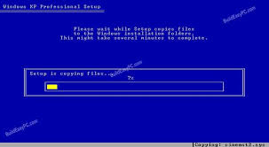
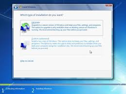

There are several kinds of Operating Systems which are used in today's life some of them are Windows of Microsoft Corporation, Android Of Google, Mac OS (Macintosh Operating System) comes in Apple devices, Linux, Lunix, Symbian
Introduction of WindowsWindows is an Operating System (OS) of Microsoft Corporation. It has many versions, many of them are
After this windows will load files as in image.
After loading files you will a menu asking for disk select the disk but make sure it is a NTFS disk then it will install windows in that disk.
If you want to format the drive or want to do partition you can do.
Now you will see a dialog box asking for upgrade (repair) and Costomize (New Install)
After these such all processes you will see a dialog box asking for language
Then you will see a dialog boxes for Date and time, Time zone, GMT time etc.
Now your computer will ask for admin name and password etc. Fill all these things
Now the computer will load desktop and make your windows computer for first use